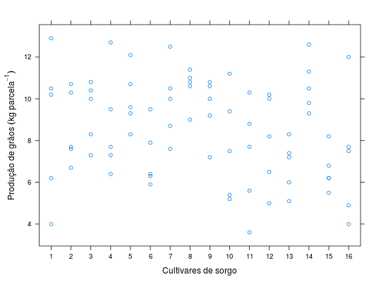
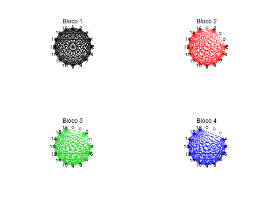

Experimento conduzido na EMBRAPA Milho e Sorgo envolvendo a avaliação de 16 cultivares de sorgo conduzido no delineamento de látice quadrado balanceado.
Um data.frame com 80 observações e 5 variáveis, em que
bloccultprodRAMALHO et al. (2005), pág. 165.
library(lattice) data(RamalhoTb11.1)#> Warning: data set ‘RamalhoTb11.1’ not foundstr(RamalhoTb11.1)#> 'data.frame': 80 obs. of 3 variables: #> $ bloc: Factor w/ 4 levels "1","2","3","4": 1 1 1 1 2 2 2 2 3 3 ... #> $ cult: Factor w/ 16 levels "1","2","3","4",..: 1 2 3 4 5 6 7 8 9 10 ... #> $ prod: num 10.2 10.7 10.8 12.7 9.3 6.4 10.5 10.6 9.2 5.2 ...addmargins(xtabs(~cult + bloc, data = RamalhoTb11.1))#> bloc #> cult 1 2 3 4 Sum #> 1 5 0 0 0 5 #> 2 1 4 0 0 5 #> 3 1 0 4 0 5 #> 4 1 0 0 4 5 #> 5 1 2 1 1 5 #> 6 1 2 1 1 5 #> 7 1 2 1 1 5 #> 8 1 2 1 1 5 #> 9 1 1 2 1 5 #> 10 1 1 2 1 5 #> 11 1 1 2 1 5 #> 12 1 1 2 1 5 #> 13 1 1 1 2 5 #> 14 1 1 1 2 5 #> 15 1 1 1 2 5 #> 16 1 1 1 2 5 #> Sum 20 20 20 20 80xyplot(prod ~ cult, data = RamalhoTb11.1, xlab = "Cultivares de sorgo", ylab = expression("Produção de grãos"~(kg~parcela^{-1})))k <- nlevels(RamalhoTb11.1$cult) a <- seq(0, 2 * pi, length.out = k + 1)[-(k + 1)] par(mfrow = c(2, 2)) col <- 1 for (b in levels(RamalhoTb11.1$bloc)) { plot(sin(a), cos(a), asp = 1, xlim = c(-1.1, 1.1), ylim = c(-1.1, 1.1), axes = FALSE, xlab = NA, ylab = NA) mtext(paste("Bloco", b)) i <- unique(as.integer(subset(RamalhoTb11.1, bloc == b)$cult)) cb <- combn(x = i, m = 2) segments(x0 = sin(a[cb[1, ]]), y0 = cos(a[cb[1, ]]), x1 = sin(a[cb[2, ]]), y1 = cos(a[cb[2, ]]), col = col) text(x = 1.08 * sin(a[i]), y = 1.08 * cos(a[i]), labels = levels(RamalhoTb11.1$cult)[i]) col <- col + 1 }